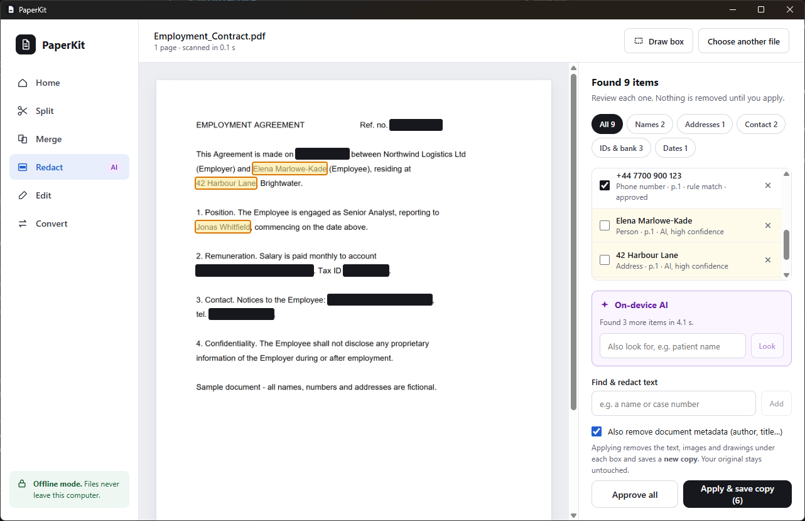
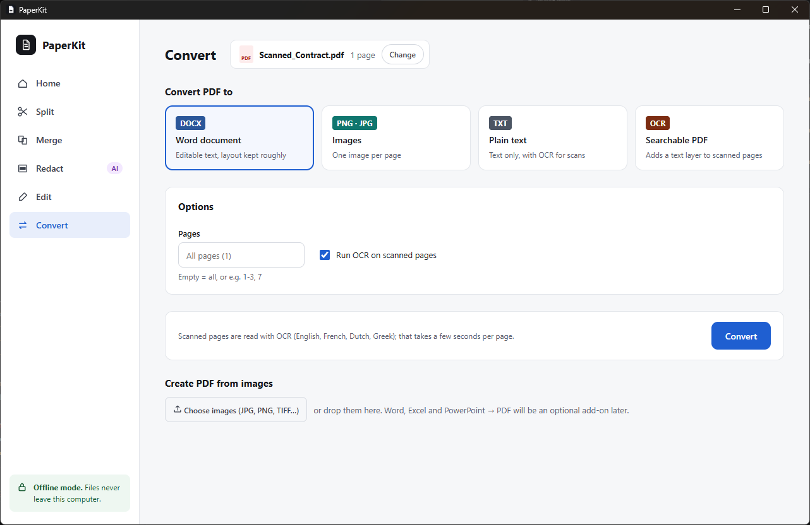
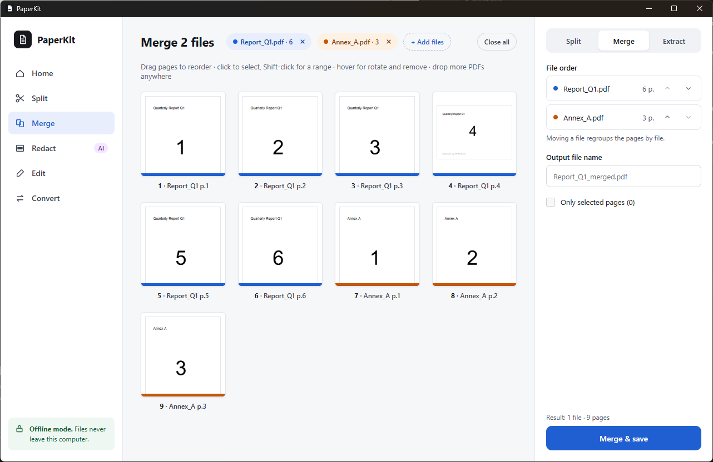
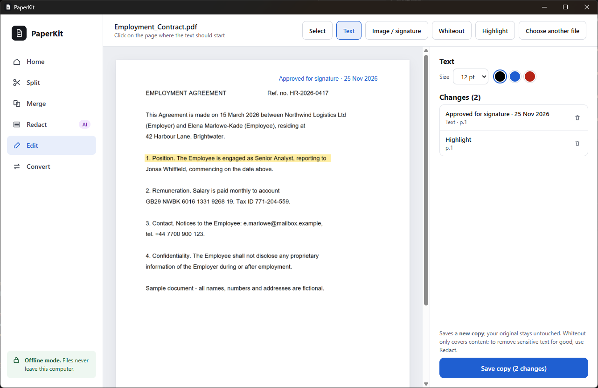

Share the document, not the secrets.
PaperKit splits, merges, redacts, edits and converts PDFs on your own computer. Its on-device AI finds names, addresses and ID numbers to black out, and your files never leave your machine.

Black boxes that really remove what's underneath.
Many tools only draw a rectangle over the text; anyone can copy it back out. PaperKit deletes the text, image pixels and drawings under every box, saves a new copy, then reads that copy back to prove nothing is left.
- Format rules with checksums find emails, phone numbers, IBANs, card numbers and national IDs.
- An AI model running on your computer suggests people's names and addresses, or anything you describe, like "patient name".
- You approve every item. Your original file is never changed, and document metadata is removed too.
Scanned paper works too.
Built-in text recognition reads scanned pages in English, French, Dutch and Greek, so they can be redacted, searched and converted like any other PDF.
- PDF to Word, plain text or PNG/JPG images.
- Make a scanned PDF searchable: pages look the same, but text can now be found and copied.
- Turn photos and scans (JPG, PNG, TIFF) into one PDF.

See every page. Drag it where it belongs.
Drop in one PDF or several. Pages appear as thumbnails, colour-coded by file, ready to reorder, rotate, remove, split into parts or merge into one.
- Split every N pages, by ranges like
1-3, 4-8, or at the pages you select. - Extract selected pages into one file or one file each.

Add a note, a signature, a highlight.
Type text straight onto the page in any of the four languages, place a scanned signature or logo, highlight a clause, or fill in a form. It's saved as a new copy, and the text stays searchable.

Drag a file. Let go on what you want.
A small glass bubble floats on your screen, wherever you put it. Drag a PDF near it and a ring of actions opens: let go on Redact, Split, Word or Edit, and it starts. No windows to find, no menus to open.
- Quick jobs like "Convert to Word" finish right there, with progress around the bubble.
- Lives in the system tray; can start with your computer if you want it to.
an action
↑ Redact · ← Split · → To Word · ↓ Edit · centre for everything else
Private by design, not by promise.
There is no account, no cloud and no tracking. Everything PaperKit does to your documents happens on your computer. It only goes online in two cases, both shown below.
Your documents
Files are opened, analysed, redacted and saved locally. Nothing is uploaded, ever, and that includes the AI.
The AI model
A one-time 596 MB download from Hugging Face, checked against a fixed fingerprint. The offline installers already include it.
New versions
PaperKit checks GitHub for a new release and asks before installing. Updates are signed, so only genuine PaperKit releases are accepted.
Download PaperKit
Free and open source. The standard installer downloads the AI model the first time you need it; the offline installer includes it, for computers without internet.
Windows
.exe · AI downloaded on first use Offline installer
.exe · AI included
macOS
.dmg · AI downloaded on first use Offline disk image
.dmg · AI included
Linux
also .deb and .rpm on the release page Offline AppImage
AI included
All files, checksums and release notes are on the latest release page. The first releases aren't code-signed yet: on Windows choose "More info" → "Run anyway"; on a Mac, right-click the app and choose Open the first time.
Questions
Is PaperKit really free?
Yes. It's open source under the AGPL-3.0 license: free to use, study and share. The source code is on GitHub.
Do I need an internet connection?
No. Every tool works offline. The internet is only used if you choose to download the AI model (once) and to check for updates. Use the offline installer if a computer never goes online.
How do I know the redaction is safe?
PaperKit removes the content under each box rather than covering it, deletes document metadata, and saves a new file. It then reads that new file back, using text recognition for scanned pages, and refuses to save if anything is still readable under a box.
What can the AI find, and how accurate is it?
People's names and addresses in English, French, Dutch and Greek, plus anything you describe in words. It suggests; you decide. Fixed-format items such as IBANs, card numbers and national IDs come from exact rules with checksums, not from the AI.
Which file should I download?
The standard installer for most people. Pick the offline installer for computers that are never connected to the internet: it includes the AI model, so it is larger.